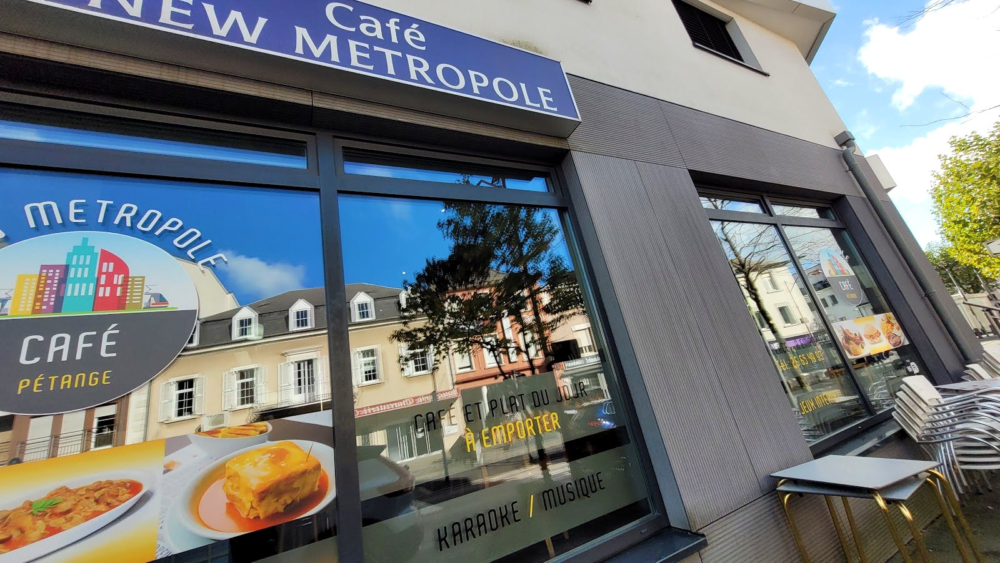
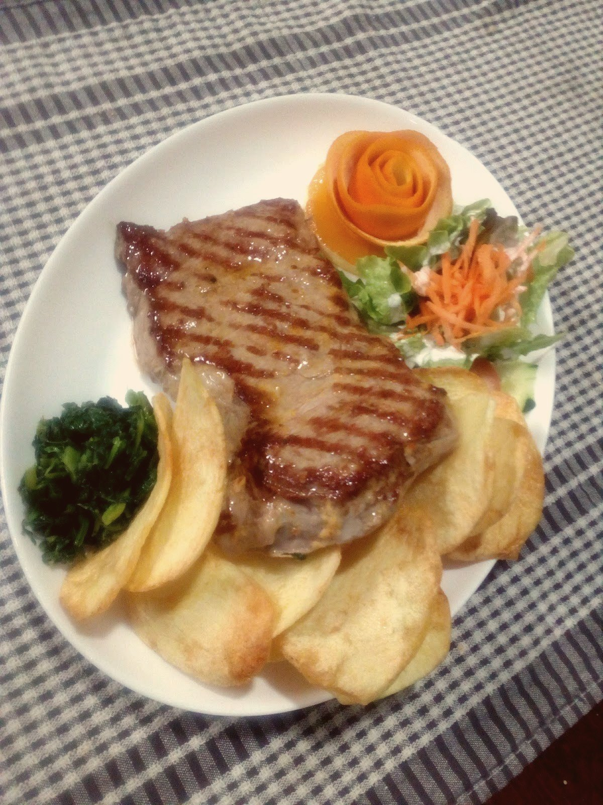
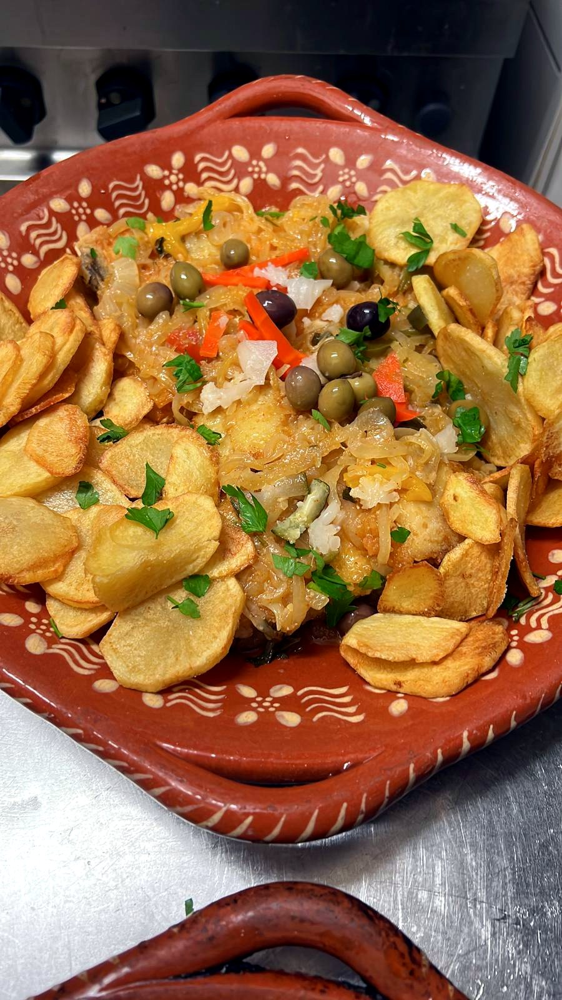
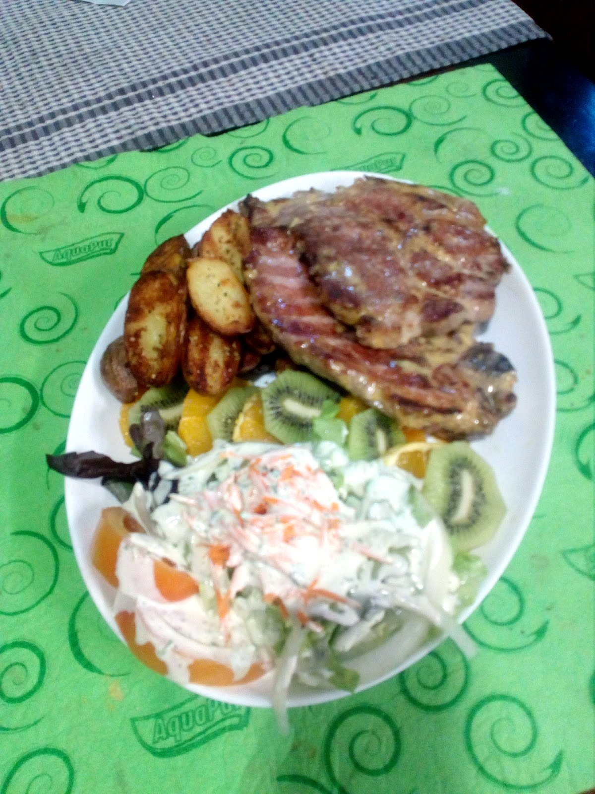
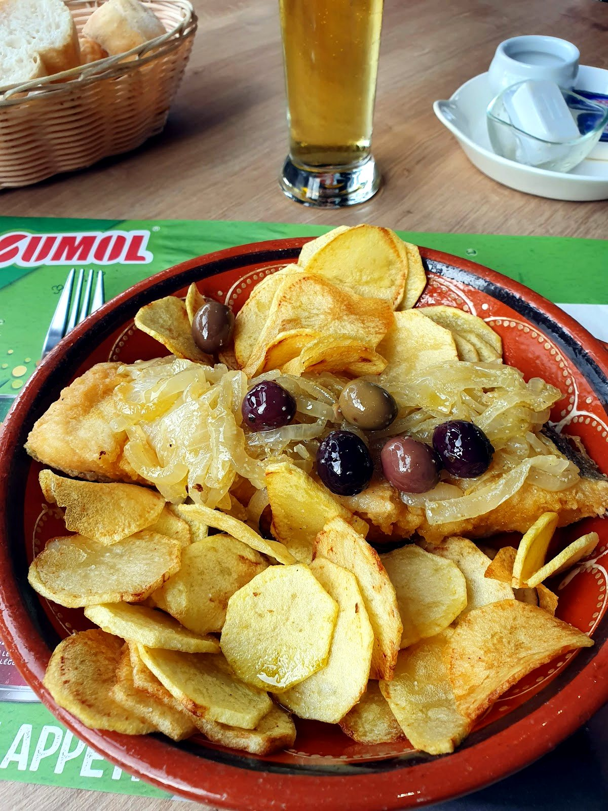

New Metropole
Café · Brasserie portugaise · Pétange
Une table portugaise en plein cœur de Pétange — francesinha, plat du jour à l'ardoise, et karaoké certains soirs. Une adresse de quartier, sans façon.
Le nom d'une métropole, l'accueil d'un café de quartier.
« New Metropole » — le nom joue sur la ville, la métropole — et se retrouve jusque sur leur propre enseigne : un skyline coloré, immeubles et tramway, peint en vitrine.
On y vient pour un café, un plat du jour à l'ardoise, une bière entre amis — et, certains soirs, pour le karaoké.
Des plats portugais, généreux et sans chichi.
Francesinha, morue traditionnelle en plat de terre cuite, grillades et riz aux lardons — une cuisine familiale portugaise, servie dans un vrai café de quartier.



Plats vus en salle, à titre d'exemple — carte et prix actuels à confirmer sur place.
Le plat du jour, à l'ardoise.
Le café affiche son plat du jour sur une ardoise, dehors, en portugais — voici un exemple réel, photographié un mercredi. Le plat du jour actuel est à confirmer sur place.
Exemple réel, photographié en salle un mercredi — plat du jour et prix actuels à confirmer sur place.
Karaoké, jeux internet, et un verre entre amis.
Sur leur propre vitrine : karaoké et musique, un point jeux internet, le wifi gratuit — un café portugais à l'ancienne, convivial, en plein centre de Pétange.

1 Route de Luxembourg, Pétange.
New Metropole n'a pas de site aujourd'hui — seulement leur enseigne. Voici une proposition de site, à partir de vos photos et de votre ardoise.